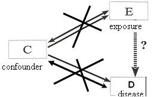
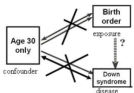
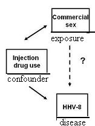
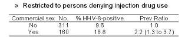

Restriction
Lead Author(s): Jeff Martin, MD
Definition of Restriction
Definition of Restriction: Restrict enrollment to only those subjects who have a specific value/range of the confounding variable
For example, when age is confounder, like it often is because age is related to many disease states,
- we would restrict enrollment in our study to only those persons with a specific value or range of age.
Restriction to Reduce Confounding
In the following DAG, you see that restriction:
- Eliminates any possible association between the exposure and the confounder
- Eliminates any possible association between the disease and confounder

There is no variability in the values of the confounding variable.
Example Restriction to Reduce Confounding - Down Syndrome
No variability in the Confounder precludes associaton with Exposure and Disease

In studies looking at the association between birth order and Down Syndrome,
- we are concerned about confounding by maternal age.
One way to deal with this would be to conduct a study where you restricted enrollment to women of a certain age or narrow age range.
Example Restriction to Reduce Confounding - HHV
Research Question: Is there an association between sexual behavior and acquisition of HHV-8 infection? 
Issue: Is association confounded by injection drug use?
Restriction is particularly useful in situations
- where the potential confounder is quantitative (or ordered) in scale but difficult to measure.
Consider, for example, the research question of whether there is an association between sexual behavior and the acquisition of HHV-8 infection.
- The issue when contemplating a study to look at this question is whether any association between sexual behavior and HHV-8 infection is confounded by injection drug use, because injection drug use is associated with both sexual behavior and HHV-8 infection.
- The problem, however, is that injection drug use is more than just a yes or no variable in that there is also a magnitude of how much injection drug use a person experiences. Capturing this magnitude is important if you really want to capture the essence of this variable.
- The solution is to restrict the study sample to persons who don't report any inject drug use and therefore you don't have to worry about measuring the magnitude of injection drug use in those who d
Cannon found that the study sample was restricted to persons denying injection use.
- After restricting this sample, the authors showed that persons who were commercial sex workers had 2.2 fold greater prevalence than non-commercial sex workers, suggestive that HHV-8 infection can be spread via sexual contact.

Advantages and Disadvantages of Restriction
Advantages:
(1) Conceptually straightforward -
- The advantage of restriction is that it is very straightforward and straightforward is good -- especially when you trying to convince people who review your manuscripts.
(2) Handles difficult to quantitate variables -
- It is the best approach for difficult to quantitate variables, like injection drug use.
(3) Can be used in the analysis phase or the design phase -
- In other words, you can limit an analysis to a restricted subset even if your study subjects had a broader range of values for the confounding variable.
Disadvantages:
(1) May limit number of eligible subjects -
- This restriction reduces the number of persons who are eligible.
(2) Inefficient to screen subjects, then not enroll -
- It may take a lot of work to sift through persons to find those with the level of the confounder you are looking for. It is inefficient to have to screen a lot of subjects and only use some of them.
(3) Residual confounding may persist if restriction categories not sufficiently narrow -
- If you don't restrict the values of the would-be confounder narrowly enough, you may not accomplish what you thought you did.
- In other words you may have what we call residual confounding, in other words, left over confounding.
- For example, say if you are studying the association birth order and Down syndrome and restrict your study population to those 20 to 30 years old.
- This may not be enough to preclude confounding because the older persons in this age range (the 30 year olds) may be very different than the youngest persons in terms of relationship with birth order and Down syndrome incidence.
(4) Limits generalizability -
- Another drawback with restriction is that by limiting the study population to only a specific group with a certain value/range of a confounder, you limit the generalizability of the study
- (for example, if you restrict to younger persons, you will have a tough time generalizing to older persons).
- Sometimes researchers worry a lot about external validity or generalizability, but the first order of business in determining associations or causality is internal validity.
- In other words, do whatever it takes to determine a valid association in whatever restricted population you need to.
- If you show an association, then go on to do the next study looking for the association in other and broader populations.
- All too often the politically driven motivation to include everyone in your studies leaves you with so much heterogeneity that it can be difficult to find effects.
The first order of business is internal validity. Generalizability can follow later.
(5) Not possible to evaluate the relationship of interest at different levels of the restricted variable -
- IF you restrict to only one level of an extraneous variable, you cannot evaluate the relationship of interest at different levels of the extraneous variable (i.e., you cannot assess interaction).
- A simple example from the field of HIV is that if you were evaluating in an observational study the association between pre-therapy CD4 count and ultimate CD4 rise in patients who began protease inhibitors, the amount of prior antiretroviral use would be an important effect modifier.
- If you limit your study population to just those participants who had never used antiretroviral agents before, you'll be missing a very interesting part of the story.
Bottom Line: Not used as much as it should be
References
Cannon, M. J., Dollard, S. C., Smith, D. K., Klein, R. S., Schuman, P., Rich, J. D., et al. (2001). Blood-borne and sexual transmission of human herpesvirus 8 in women with or at risk for human immunodeficiency virus infection. N Engl J Med, 344(9), 637-643.